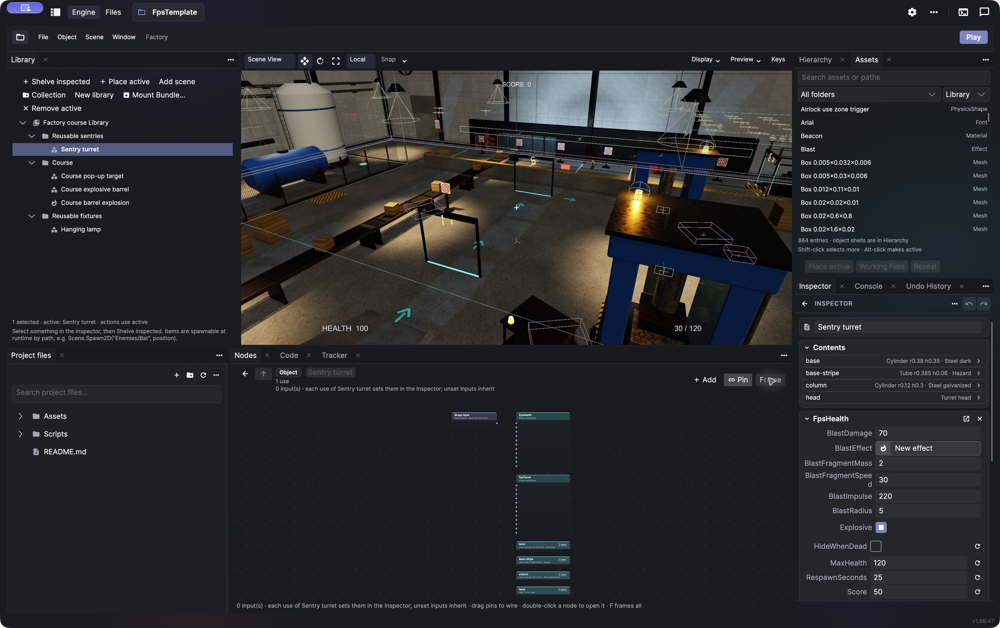
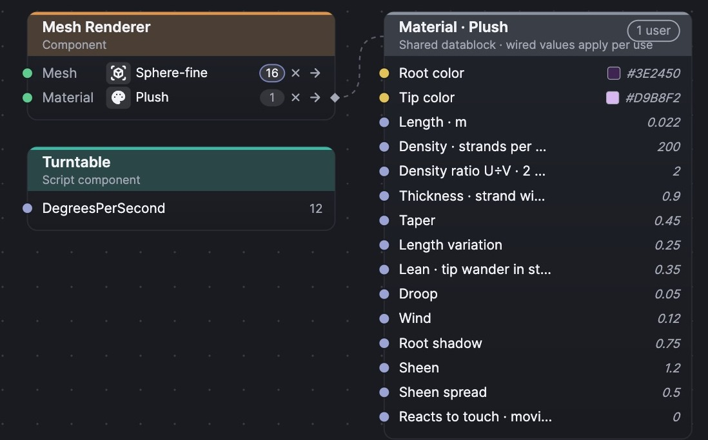

My game engine · In development
PlushEngine
I wanted a game engine where I could follow an idea all the way through, understand what was happening underneath, and change the parts that annoyed me. So I started building one.

The data model
Make it once. Know where it goes.
Blender’s datablocks made a lot of sense to me. A mesh, material, or behavior should be something I can reuse, with a clear relationship between the original and everywhere it’s used.
In Plush, I can change a shared object and have that change reach its uses, while still choosing what varies locally. The graph shows those connections. Bundles let me take useful work into another project. I want to spend less time wondering which copy of something I’m editing.

The engine stack
What’s underneath
C# for the engine and gameplay, Python for authoring and automation. I like having ordinary code I can read and tools I can change.
- Engine & gameplay
- C# · .NET 10
- Editor
- Avalonia
- Rendering
- Vulkan · Silk.NET · Slang
- Physics
- Jolt · Box2D
- Authoring
- Python · plupy
- Game builds
- Separate runtime; no editor or Python
Help when I want it
MCP tools let an assistant inspect the project and help with setup or scripts. I’m using AI extensively to build Plush, but I want to make games in it without needing an agent to operate it.
Room for the things I enjoy
There’s a music tracker in the editor, too. I’ve used trackers for years, and wanted patterns, instruments, and the game in the same place.